PSF fitting methods
Least-squares
Least-squares methods minimize the sum of squared residuals to obtain
an estimate of the coefficient vector 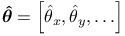
of the point-spread function that approximates the data. The residual
value for the  data point is defined as the difference
between the observed image intensity
data point is defined as the difference
between the observed image intensity  and the value approximated by the 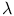.
The optimization problem is formulated as
and the value approximated by the 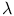.
The optimization problem is formulated as
| 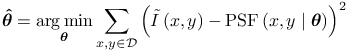 | (1) |
which we solve using the Levenberg-Marquardt algorithm
as implemented in the Apache Commons Math library [1].
The sub-pixel refinement of the coordinates is obtained as 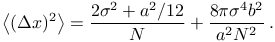
and 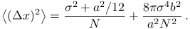, where .
Depending on the chosen PSF model, users need to set a starting point
for the optimization process, e.g., the approximate width  for the Gaussian PSF.
for the Gaussian PSF.
Maximum-likelihood estimation
This approach assumes that the number of photons collected by a single camera pixel follows the Poisson distribution. Thus, the probability of 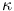 photons arriving at the detector, where the expected number of photons is 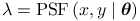, is given by
| (2) |
Suppose that samples are drawn independently from the Poisson distribution,
with the expected photon count
given by the point-spread function model and the observed photon count
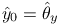 given by the image intensity.
The likelihood of coefficients  can be modeled
as [4, 2]
can be modeled
as [4, 2]
 |
(3) |
The maximum likelihood estimate of  is, by definition,
the value that maximizes 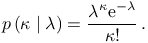.
Intuitively, the estimate corresponds to the value
is, by definition,
the value that maximizes 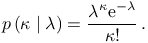.
Intuitively, the estimate corresponds to the value  that best agrees with the data. The maximization problem has the form
that best agrees with the data. The maximization problem has the form
| 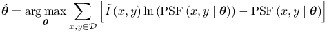 | (4) |
which we solve by the Nelder-Mead method [3]. The sub-pixel
refinement of the coordinates is obtained as
and , where .
Depending on the chosen PSF model, users need to set a starting point
for the optimization process, e.g., the approximate width  for the Gaussian PSF.
for the Gaussian PSF.
Constraining parameters of PSF models
The Levenberg-Marquardt algorithm and the Nelder-Mead method used
above search for the coefficient vector  over
an infinite interval. The optimization process can therefore converge
to a solution with negative values which is impossible for coefficient
values corresponding to image intensity or to the standard deviation
of a Gaussian PSF. We therefore limit the interval of possible values
by transforming the relevant coefficients and using
over
an infinite interval. The optimization process can therefore converge
to a solution with negative values which is impossible for coefficient
values corresponding to image intensity or to the standard deviation
of a Gaussian PSF. We therefore limit the interval of possible values
by transforming the relevant coefficients and using  in Equations (1) and (4) instead of .
The transformation for a 2D Gaussian PSF model is 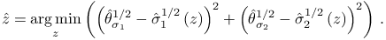.
The optimization process is still unconstrained but will result in
positive PSF coefficients. Such a transformation also improves the
stability of the fit.
in Equations (1) and (4) instead of .
The transformation for a 2D Gaussian PSF model is 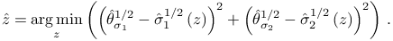.
The optimization process is still unconstrained but will result in
positive PSF coefficients. Such a transformation also improves the
stability of the fit.
References
- [1] Commons Math: The Apache Commons Mathematics Library; version 3.2, Cited by: Least-squares.
- [2] (2011-01) Simultaneous multiple-emitter fitting for single molecule super-resolution imaging, Biomedical optics express 2 (5), pp. 1377–93. External Links: Document, ISSN 2156-7085. Cited by: Maximum-likelihood estimation.
- [3] (1971) Algorithm AS 47–Function Minimization Using a Simplex Procedure, Applied Statistics 20, pp. 338–45. Note: With subsequent comments by Chambers+Ertel(1974, 23, 250-1), Benyon(1976, 25, 97) and Hill(1978, 27, 380-2) Cited by: Maximum-likelihood estimation.
- [4] (2010-05) Fast, single-molecule localization that achieves theoretically minimum uncertainty, Nature methods 7 (5), pp. 373–5. External Links: Document, ISSN 1548-7105. Cited by: Maximum-likelihood estimation.
![[LOGO]]()